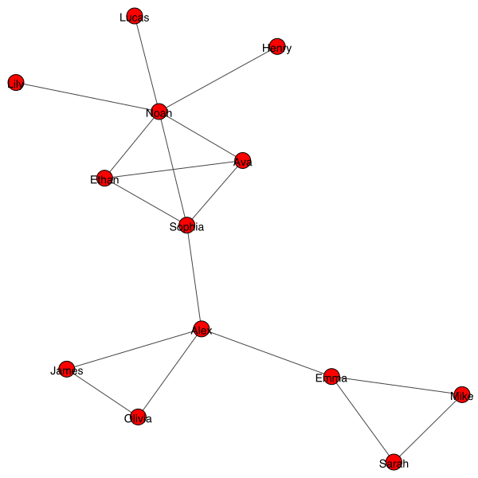

# Uncomment if you use Colab
#!pip install igraphCoding - Centrality
1 Computing centrality with Python
1.1 Network of university students
Let’s compute the centrality of the network using Python igraph.
import igraph
names = [
"Sarah",
"Mike",
"Emma",
"Alex",
"Olivia",
"James",
"Sophia",
"Ethan",
"Ava",
"Noah",
"Lily",
"Lucas",
"Henry",
]
edge_list = [
(0, 1),
(0, 2),
(1, 2),
(2, 3),
(3, 4),
(3, 5),
(3, 6),
(4, 5),
(6, 7),
(6, 8),
(6, 9),
(7, 8),
(7, 9),
(8, 9),
(9, 10),
(9, 11),
(9, 12),
]
g = igraph.Graph()
g.add_vertices(13)
g.vs["name"] = names
g.add_edges(edge_list)
igraph.plot(g, vertex_label=g.vs["name"])
igraph offers a wide range of centrality measures as methods of the igraph.Graph class.
- Degree centrality:
igraph.Graph.degree() - Closeness centrality:
igraph.Graph.closeness() - Betweenness centrality:
igraph.Graph.betweenness() - Harmonic centrality:
igraph.Graph.harmonic_centrality() - Eccentricity:
igraph.Graph.eccentricity() - Eigenvector centrality:
igraph.Graph.eigenvector_centrality() - PageRank centrality:
igraph.Graph.personalized_pagerank()
For example, the closeness centrality is computed by
g.closeness()[0.3,
0.3,
0.4,
0.5217391304347826,
0.36363636363636365,
0.36363636363636365,
0.5454545454545454,
0.42857142857142855,
0.42857142857142855,
0.48,
0.3333333333333333,
0.3333333333333333,
0.3333333333333333]Computing Katz centrality
Let’s compute the Katz centrality without using igraph. Let us first define the adjacency matrix of the graph
A = g.get_adjacency_sparse()which is the scipy CSR sparse matrix. The Katz centrality is given by
\mathbf{c} = \beta \mathbf{1} + \alpha \mathbf{A} \mathbf{c}
So, how do we solve this? We can use a linear solver but here we will use a simple method:
- Initialize \mathbf{c} with a random vector.
- Compute the right hand side of the equation and update \mathbf{c}.
- Repeat the process until \mathbf{c} converges.
Let’s implement this.
import numpy as np
alpha, beta = 0.1, 0.05 # Hyperparameters
n_nodes = g.vcount() # number of nodes
c = np.random.rand(n_nodes, 1) # column random vector
for _ in range(100):
c_next = beta * np.ones((n_nodes, 1)) + alpha * A * c
if np.linalg.norm(c_next - c) < 1e-6:
break
c = c_next
print(c)[[0.06338729]
[0.06338729]
[0.07048542]
[0.07807918]
[0.06423107]
[0.06423107]
[0.08184309]
[0.07474495]
[0.07474495]
[0.09085937]
[0.05908602]
[0.05908602]
[0.05908602]]- Does the centrality converge?
- Change the hyperparameter and see how the result changes 😉 If the centrality diverges, think about why it diverges.
Hint: Katz centrality can be analytically computed by
\mathbf{c} = \beta \left(\mathbf{I} - \alpha \mathbf{A} \right)^{-1} \mathbf{1}
Exercise (Optional)
Compute the PageRank centrality of this graph
# Your code here1.2 Network of ancient Roman roads
Load the data & construct the network
import pandas as pd
root = "https://raw.githubusercontent.com/skojaku/adv-net-sci/main/data/roman-roads"
node_table = pd.read_csv(f"{root}/node_table.csv")
edge_table = pd.read_csv(f"{root}/edge_table.csv")The node table:
node_table.head(3)| node_id | lon | lat | |
|---|---|---|---|
| 0 | 0 | 12.506 | 41.875 |
| 1 | 1 | 12.470 | 41.904 |
| 2 | 2 | 12.471 | 41.881 |
The edge table:
edge_table.head(3)| src | trg | |
|---|---|---|
| 0 | 1785 | 358 |
| 1 | 1785 | 1771 |
| 2 | 1771 | 350 |
Let’s construct a network from the node and edge tables.
import igraph
g = igraph.Graph() # create an empty graph
g.add_vertices(node_table["node_id"].values) # add nodes
g.add_edges(list(zip(edge_table["src"].values, edge_table["trg"].values))) # add edgeswhich looks like this:
coord = list(zip(node_table["lon"].values, -node_table["lat"].values))
igraph.plot(g, layout = coord, vertex_size = 5)
Exercise 🏛️
- Compute the following centrality measures:
- Degree centrality 🔢
- Eigenvector centrality
- PageRank centrality
- Katz centrality
- Betweenness centrality
- Closeness centrality
- Plot the centrality measures on the map and see in which centrality Rome is the most important node. 🗺️🏛️ (as beautiful as possible!!)